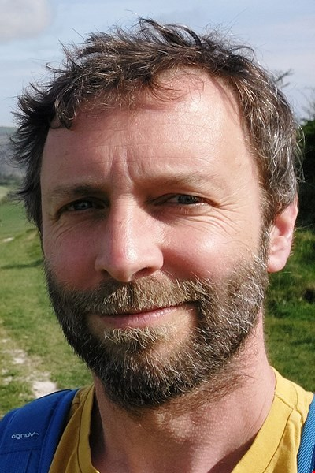

SynDAiTE: Synthetic Data for AI Trustworthiness and Evolution
Workshop at the European Conference on Machine Learning and Principles and Practice of Knowledge Discovery in Databases (ECML-PKDD 2025), September 15, 2025 - Porto, Portugal
Organisers

Dr. Marco Piangerelli

Ylenia Rotalinti

Prof. Heitor Murilo Gomes

Prof. Maroua Bahari

Prof. Yi He

Dr. Bardh Prenkaj

André Carreiro

Prof. Ana Carolina Lorena

Prof. Kate Smith-Miles

Zafeiris Kokkinogenis

Prof. Albert Bifet

Prof. Carlos Soares
🚨📢 Where to submit? 📢🚨 All submissions must be done via Microsoft CMT here.
Table of contents
- Aims and Scope
- Important Dates
- Topics of Interests
- Invited Talks
- Program at a Glance
- Registration and Presentation Policy
- Acknowledgment
Aims and Scope
The rapid advancement of artificial intelligence (AI) relies heavily on access to large, diverse, and high-quality datasets for training and evaluation. However, the increasing scarcity of data, strict privacy regulations, and the high costs associated with collection and annotation are creating significant barriers to progress. Projections suggest that by 2050, we may face a shortage of fresh text data, and by 2060, image data may become similarly limited. These challenges make it imperative to explore alternatives that can sustain AI’s growth and effectiveness. Synthetic data presents itself as a compelling solution to these issues, offering the advantages of scalability, customisation, and inherent anonymisation. It allows for the generation of large volumes of tailored datasets without the same privacy and cost concerns of real data.
Important Dates
- Paper Submissions:
June 20th, 2025 - Notifications:
July 14th, 2025 - Camera-Ready: Upon notification from Workshop Track Chairs (TBD)
- Workshop: September 15th, 2025
All deadlines are 11:59 pm, AoE.
Topics
SynDAiTE welcomes contributions on the use of synthetic data on all topics below, independent of the application domain (e.g., health, finance, business, basic sciences, construction computational advertising, IoT, etc.) and of data types (e.g., networks, graphs, logs, spatiotemporal, multimedia, time series, genomic sequences, and streaming data.):
- Generation:
- Techniques for high-fidelity, domain-specific synthetic data production.
- Customisation for anomaly and rare-event detection.
- Scalability and adaptability to various applications.
- Ethical aspects of synthetic data.
- Responsible AI:
- Meta-learning for understanding models and algorithms.
- Privacy-preserving ML.
- Methodologies to support evaluation according to Responsible AI pillars.
- AI Auditing and Red Teaming:
- Stress testing models and algorithms.
- Interpretability and explainability for auditing ML systems.
- Adversarial ML.
- Challenges in Synthetic Data Use:
- Fidelity and accuracy concerns in real-world applications.
- Bias detection and mitigation strategies.
- Validation frameworks to ensure reliability and generalisation.
- Dynamic and Temporal Contexts:
- Generating data for streaming environments and micro-batch processing.
- Incorporating temporal complexity and drift phenomena.
- Learning Frameworks:
- Online continual learning with synthetic datasets.
- Data stream mining with synthetic drifts and anomalies.
- Supervised and unsupervised learning with synthetic augmentation.
- Evaluating synthetic data’s impact on model performance and robustness.
- Anomaly, Novelty, and Drift Detection:
- Leveraging synthetic data for rare-event detection in evolving datasets.
- Mitigating challenges associated with concept drift and changing data distributions.
- Using synthetic data to test and refine anomaly detection frameworks.
- Simulating anomalies in stream/dynamic environments.
- Applications of Data Synthesis for AI training (Healthcare, Finance, Transportation, Cybersecurity).
Invited Talks:
Lessons from Synthetic Health Data Generation: Fidelity, Privacy, Augmentation & Time - Allan Tucker - 14:10
|  |
Abstract:Primary healthcare care data offers huge value in modelling disease and illness. However, this data holds extremely private information about individuals and privacy concerns continue to limit the wide-spread use of such data, both by public research institutions and by the private health-tech sector. One possible solution is the use of synthetic data which mimics the underlying correlational structure and distributions of real data but avoids many of the privacy concerns. Brunel University London has been working in a long-term collaboration with the Medicine and Health Regulatory Authority in the UK to construct a high-fidelity synthetic data generator using probabilistic models with complex underlying latent variable structures. This work has led to multiple releases of synthetic data on a number of diseases including covid and cardiovascular disease, which are available for state-of-the-art AI research. Two major issues that have arisen from our synthetic data work are issues with bias, even when working with comprehensive national data, and with concept drift where subsequent batches of data move away from current models and what impact this may have on regulation. In this talk I will discuss some of the key results of the collaboration: on our experiences of synthetic data generation, on the detection of bias and how to better represent the true underlying UK population, and how to handle concept drift when building models of healthcare data that evolves over time. Speaker's Bio:Allan Tucker is Professor of Artificial Intelligence in the Department of Computer Science at Brunel University London, where he heads the Intelligent Data Analysis (IDA) Group. His research spans biomedical informatics, eco-informatics, machine learning, and Bayesian networks, with current projects involving Google, the Royal Free Hospital, UCL, the Zoological Society of London, and the Royal Botanical Gardens at Kew. He is also involved in significant grants, including a Natural Environment Research Council (NERC) project on improved estimation of global-scale groundwater changes (2024–2027) and a BEIS Innovate UK Regulatory Pioneer Fund project on using high-fidelity synthetic data in clinical trials (2023–2025). |
Simulation as a Data Engine for Physical AI - Hugo Penedones - TBD
Abstract:AI is having a remarkable impact on the physical sciences and engineering. From AI-driven material discovery and drug design to robotics and weather forecasting, the progress of Physical AI depends on high-quality data. This talk will show how we can leverage the mature field of numerical simulation to generate synthetic data for training machine learning models. Examples will be demonstrated using the Inductiva cloud HPC platform and its minimalist Python SDK, which is designed to be intuitive for the machine learning community. Speaker's Bio:Hugo Penedones is a Machine Learning researcher and engineer, co-founder of Inductiva Research Labs, on a mission to blend Scientific Computing and Machine Learning. Most recently, he worked at Google DeepMind, in London and Zurich. Prior to that, he worked in the Query Formulation team at Microsoft Bing and did research in Machine Learning and Computer Vision at Idiap Research Institute and École Polytechnique Fédérale de Lausane, both in Switzerland. He did my undergraduate studies in Informatics and Computing Engineering at FEUP, in Portugal. |
Program at a Glance (room TBD):
- 14:00 - Welcome and Opening Remarks
- 14:10 - - Allan Tucker - Lessons from Synthetic Health Data Generation: Fidelity, Privacy, Augmentation & Time
- TBD - Oral Presentations - Part A
- TBD - - Joanna Komorniczak et al. - Synthetic Non-stationary Data Streams for Recognition of the Unknown
- TBD - - Reza Paki et al. - cPB: Continuous Piggyback for Streaming Continual Learning with Temporal Dependence
- TBD - - Jonas van Elburg et al. - Can we Evaluate RAGs with Synthetic Data?
- TBD - - Miguel Aspin et al. - DriftMoE: Streaming Mixture of Experts for Adaptive Learning under Concept Drift
- TBD - - Benoît Ronval et al. - TAGAL: Tabular Data Generation using Agentic LLM Methods
- TBD - - Ivo Façoco et al. - Adapting Stable Diffusion Models for Domain-Specific Medical Imaging: A Case Study in Synthetic Retinal Fundus Image Generation
- TBD - - Melle Mendikowski et al. - ReL8r: A New Benchmarking Framework for Tabular Data Generators Using Constructed Relationships
- TBD - - Ghanem Bahrini et al. - Generating Censored Data with Controlled and Real-World-Like Properties
- TBD - - Ghadeer Alsharif et al. - SMLT: A Synthetic Dataset for Stealthy Manipulation of Energy Market via False Data Injection Attacks (online)
- TBD - Poster Session - Part A
- TBD - Coffee Break
- TBD - - Hugo Penedones - Simulation as a Data Engine for Physical AI
- TBD - Oral Presentations - Part B
- TBD - - Mayank Nagda et al. - Style Transfer for High-Fidelity Time Series Augmentation
- TBD - - Mahmoud Ibrahim et al. - Enabling Granular Subgroup Level Model Evaluations by Generating Synthetic Medical Time Series
- TBD - - Pedro Sousa et al. - Evaluating Predictive Maintenance Models in the Presence of Reflexivity: A Case Study in Pharmaceutical Manufacturing
- TBD - - Lorenzo Peracchio et al. - Mitigating Dataset Shift via Smart Augmentation with Conditional Diffusion Models
- TBD - - João Vitorino et al. - SPATA: Systematic Pattern Analysis for Detailed and Transparent Data Cards
- TBD - - Iqra Nosheen et al. - Enhancing Synthetic Data Realism for Autonomous Vehicles Using Segmentation-Guided ControlNet
- TBD - Poster Session - Part B
- 17:50 - Best Paper Awards Announcement
- 17:55 - Concluding remarks
Registration and Presentation Policy
Each accepted paper must have at least one author registered for the full conference by the early registration deadline and must be presented at the workshop even if they opt-out of the post-proceedings. We expect the authors, the program committee, and the organizing committee to adhere to the ECML-PKDD Code of Conduct.
Acknowledgement

“The Synthetic Data for AI Trustworthiness and Evolution (SynDAiTE 2025)” workshop has been supported by VICI & C and the @HOME Project: Lazio Region, FESR Lazio 2021–2027 (# F89J23001050007, CUP B83C23006240002).
Contacts
For general inquiries about the workshop, please email syndaite@gmail.com